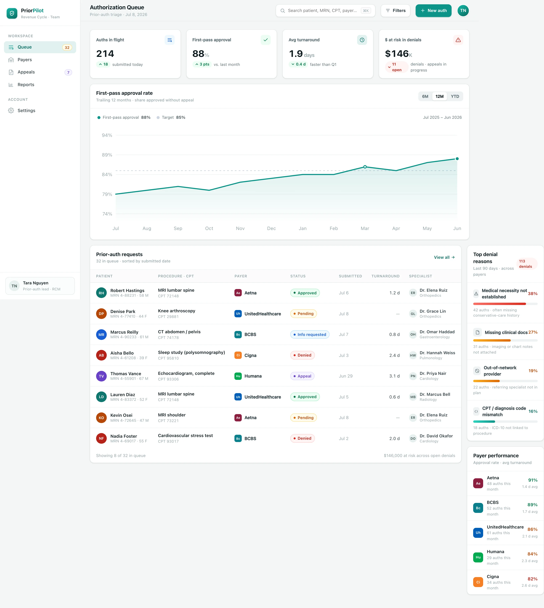
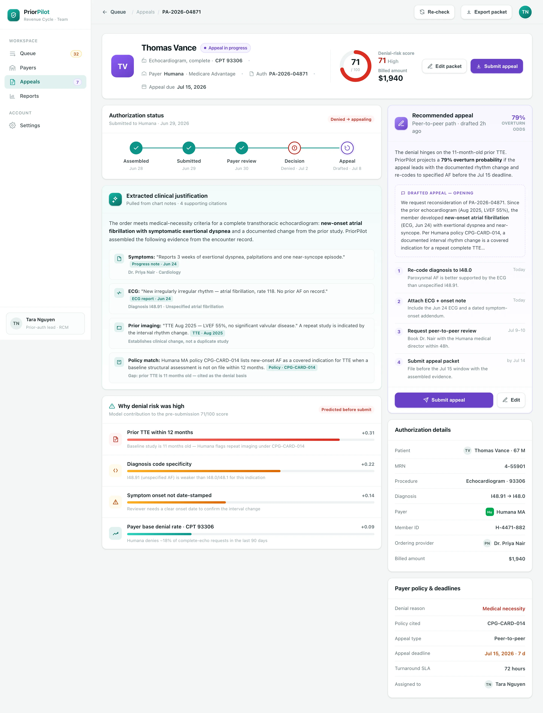

Assemble
The engine reads the order and chart, pulls the qualifying notes and imaging, matches the payer's policy, and builds a complete submission packet with the codes attached.
PriorPilot auto-assembles and submits every prior-authorization, scores its denial risk before you send it, tracks the payer, and drafts the appeal when a decision goes the wrong way — one triaged queue instead of fax, phone and hold music.
Most denials trace back to a handful of fixable gaps. PriorPilot learns each payer's rules and flags the missing piece before you submit — so the request goes out complete the first time.
Conservative-care history or the qualifying indication isn't documented the way the payer's policy requires.
Imaging, chart notes or lab results referenced in the order never made it into the submission packet.
The referring or rendering specialist sits outside the member's plan network for the requested service.
The ICD-10 diagnosis doesn't link cleanly to the procedure code, or a more specific code is required.
PriorPilot doesn't just say "high risk." It shows the weighted reasons behind the score — the exact gaps to close before the auth goes out. Here's one echocardiogram request flagged at 71/100.
PriorPilot runs the whole prior-auth lifecycle — pulling the packet together, scoring denial risk before submission, and drafting the appeal if a payer says no.
The engine reads the order and chart, pulls the qualifying notes and imaging, matches the payer's policy, and builds a complete submission packet with the codes attached.
A denial-risk model scores each auth 0–100 before it's sent, attributes the risk to specific gaps, and tells your team exactly what to fix to clear the payer first time.
When a payer denies, PriorPilot drafts a citation-backed appeal, re-codes where needed, and routes it to peer-to-peer — all before the deadline window closes.
BuildspaceLabs built the MVP front end: an Authorization Queue for triage across payers, and a per-authorization detail view for working a denial and its appeal.
First-pass approval, turnaround and denial exposure sit above a status-coded table — so the auths that need a human land on top, worst-first.

A status timeline, the AI-extracted clinical justification with chart citations, a weighted denial-risk score, and a drafted appeal with sequenced next actions.

Intake, submission, denial prediction and appeals consolidated into one prior-auth surface — nothing left on a fax cover sheet.
A single worklist across payers with first-pass, turnaround and denial-exposure KPIs above a status-coded table.
A 0–100 denial probability per auth, computed before submission and refreshed as documents change.
The order, chart notes, imaging and codes pulled together into a payer-ready submission, no manual collation.
Citation-backed appeal letters with the winning argument, re-coding suggestions and a peer-to-peer path.
Each request's status — submitted, in review, info requested, decided — updated across every payer in one place.
Top denial reasons and per-payer approval and turnaround, so the recurring gaps get fixed at the source.
A denial score nobody understands gets ignored. PriorPilot shows the weighted gaps behind every score and cites the payer policy it's matching against — so the recommendation carries its own justification.
Delivered as a production-quality MVP in a nine-week engagement.
We build AI-native products like PriorPilot. Tell us about your revenue-cycle motion and we'll show you what a denial-predicting, appeal-drafting queue looks like on your payers and your codes.